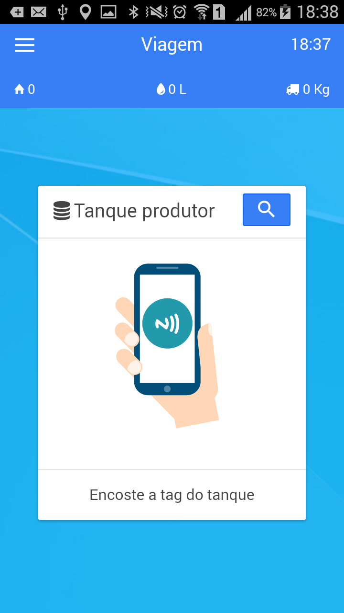
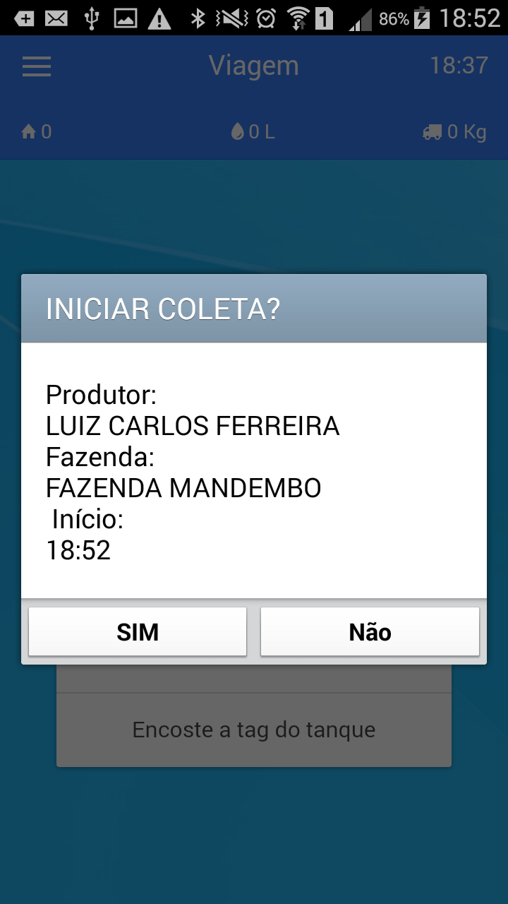
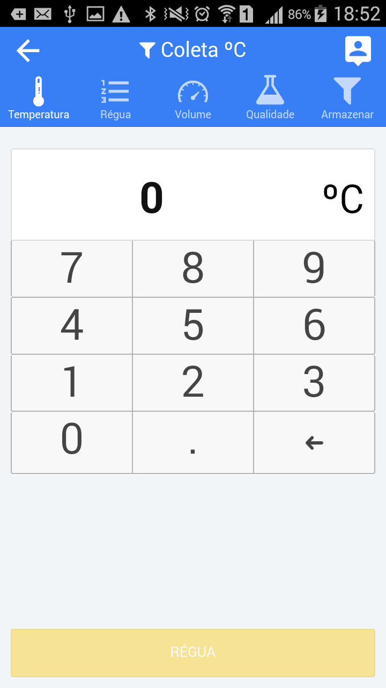
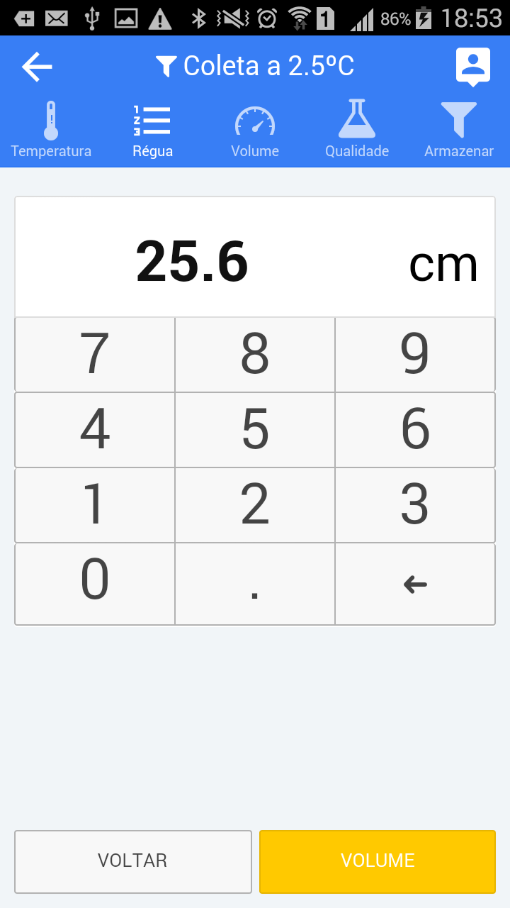
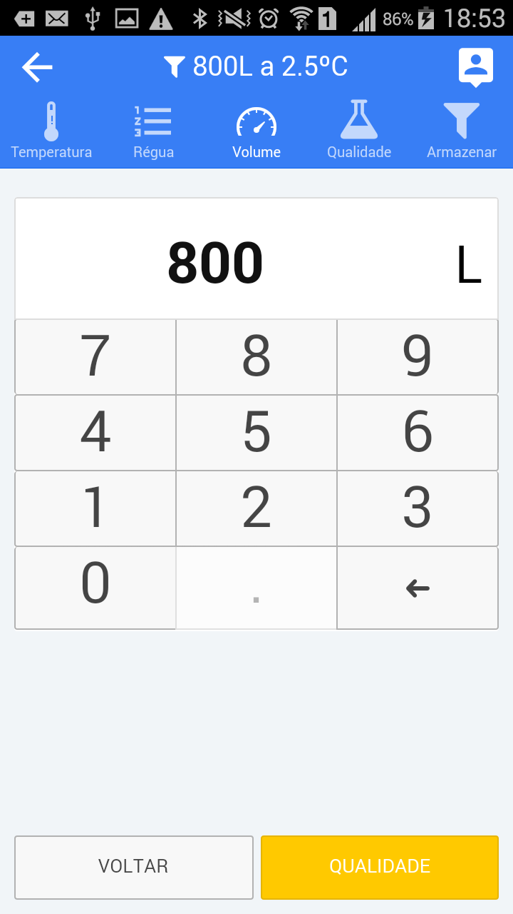
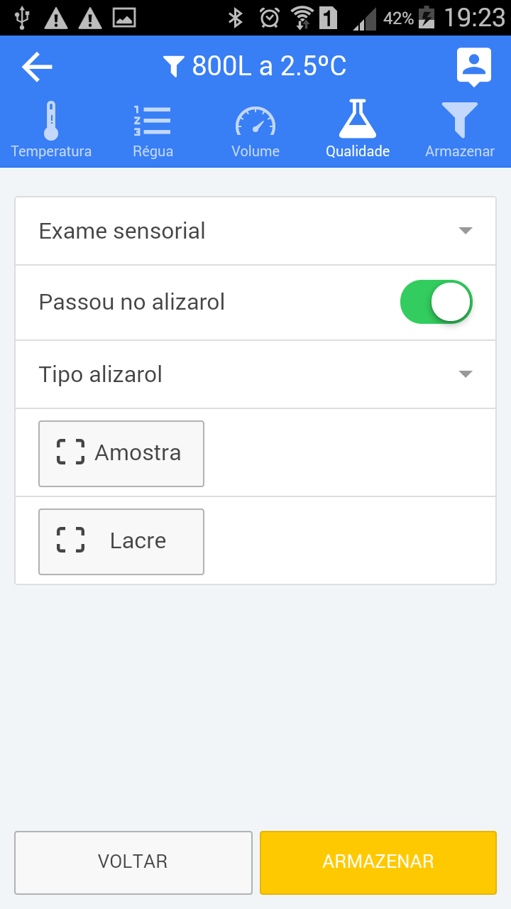
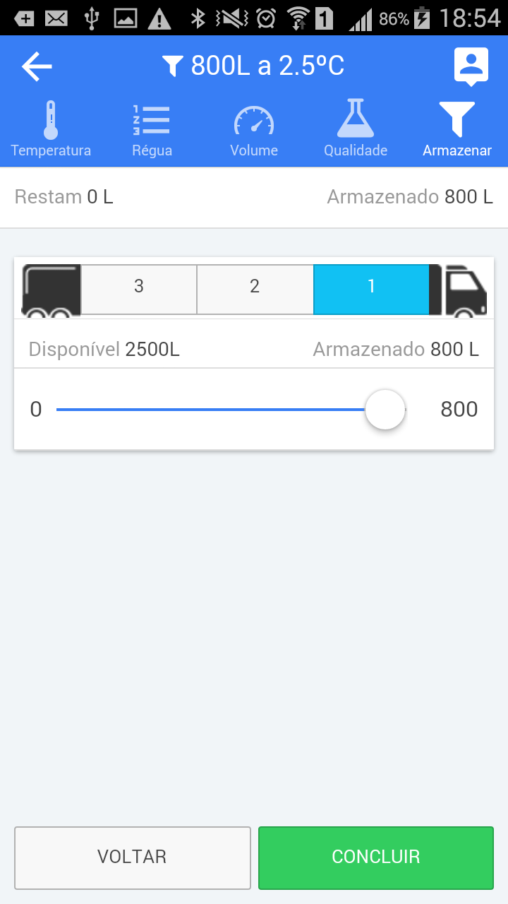
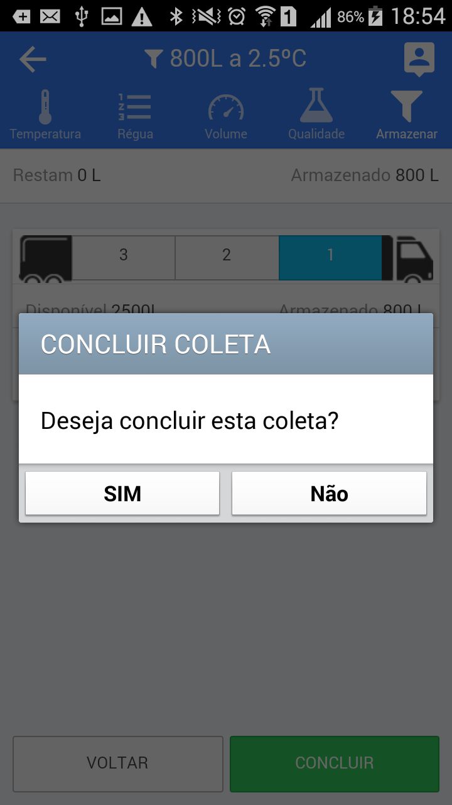
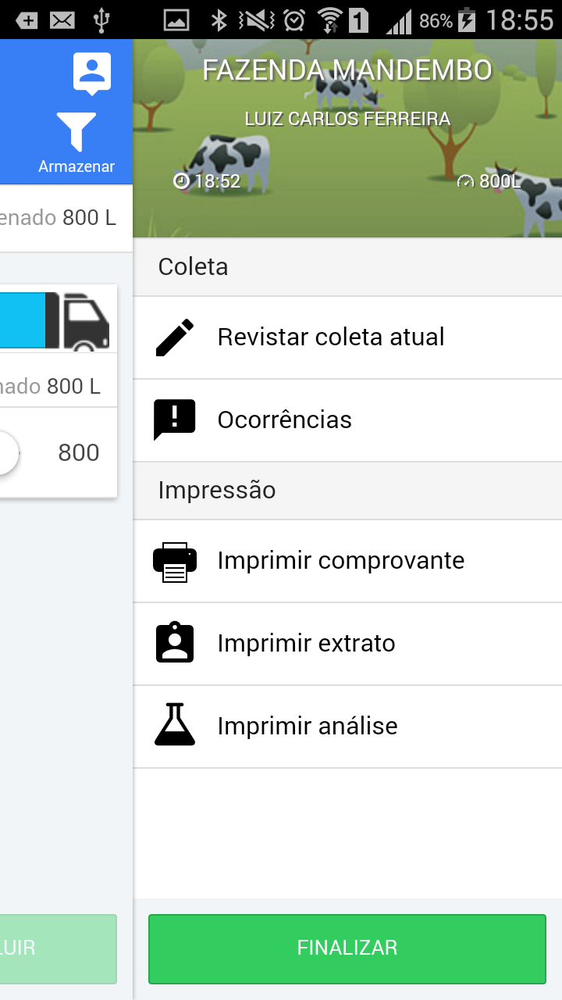

Registrando Coleta
Registrando uma coleta #
Procedimentos para realizar o registro das coletas no aplicativo ::
I - Identificando o produtor, fazenda e ponto de coleta#
O Aplicativo pode ser configurado para identificar de diversas formas o ponto de coleta, mas o meio mais comum e através da Tag (NFC). Existe também a possibilidade de identificar por meio de código de barras e por geo-referência (GPS). Para Identificar o produtor e ponto de coleta, aproxime a parte de traz do celular da etiqueta (NFC) que geralmente fica afixada na tampa do tanque resfriador, ou faça a leitura do código de barras.
Se por algum motivo a etiqueta não puder ser alcançada, o ponto de coleta poder ser escolhido de uma lista (Itinerário), clicando no ícone .

II - Conferindo os dados do produtor#
Após a leitura do identificador do ponto de coleta, a tela abaixo será exibida para conferência. Para prosseguir, clique em "Sim" se os dados estiverem corretos.

III - Anotando a temperatura do tanque#
A Temperatura do tanque resfriador é o primeiro registro que o APP considera na visita. O Sistema pode estar configurado para validar o valor digitado, e se for informado um valor fora do intervalo permitido, uma mensagem de alerta será exibida e o sistema "NÃO" permitirá que os outros dados sejam digitados até que se informe uma temperatura dentro do intervalo correto.

IV - Anotando a medida da régua#
Anotar a medida da régua pode ser "opcional", dependendo da política da empresa (Cooperativa ou Laticínio), mas sempre aconselhamos que ao medir o volume de leite no tanque resfriador, o agente de coleta informe também a medida da régua, pois esta informação pode ser útil para ajudar a esclarecer diferenças nos valores anotados ou diante de uma reclamação do produtor. Se não for necessário informar o valor, basta clicar no botão [VOLUME] para continuar os registros.

V - Anotando o volume de leite#
Está informação certamente é a mais importante no registro da visita e deve ser inserido com todo o cuidado. Milk's Rota irá conferir o valor inserido com os últimos 3 valores digitados nas visitas anteriores. Caso exisita uma diferença marcante, o sistema exibirá um alerta, mas "NÃO" impedirá que o registro seja feito.

VI - Alizarol - Resultado#
A maioria das informações desta tela "NÃO" são obrigatórias, mas sempre que possível é bom fornecê-las para melhorar o controle do laticínio.
Quando o leite é aprovado, após passar pelo exame de alizarol, não será necessário fazer nenhuma alteração no botão de controle "Passou no alizarol", que permanecerá nao cor "Verde", indicando que o leite está bom para coleta. Se for reprovado, este botão deve ser "Tocado" e passará para a posição de "desligado" e automaticamente ficará vermelho, indicando que o leite não foi aprovado para coleta. Neste momento o App irá enviar uma notificação para o laticínio ou para a pessoa responsável pelo controle de coleta informando o cancelamento da coleta pelo motivo de não ser aprovado no exame de alizarol.
O Agente de coleta poderá ainda escolher no controle "Tipo Alizarol", o tipo de de alizarol que aplicou para fazer o exame (Não é obrigatório)
Amostra e Lacre::
O número de amostra e o número do lacre de contrapova devem ser informado do lado direito dos botões que tem o mesmo nome. Se o agente de coleta (Motorista) clicar no botão [AMOSTRA] ou [LACRE], o sistema abrirá o leitor de códigos de barras, para o caso dos potes serem identificados com códigos de barras. Se isto acontecer por engano, o agente de coleta deve clicar no botão de retorno do celular para fechar a câmera.

VII - Armazenamento no veículo#
Informar o compartimento (Boca) do tanque do veículo, para onde o leite será bombeado.
O App fará o controle automático do volume armazenado em cada compartimento e informará a quantidade possível de ser armazenada em cada (Boca) e, quando o volume for MAIOR que a capacidade, a cor do tanque escolhido ficará "Vermelha" indicando que o leite poderá Derramar, momento que o motorista deverá monitorar o enchimento da boca e mudar o bombeamento para outro compartimento ou boca.
Escolha um dos compartimentos do veículo para onde o leite será bombeado, clicndo no número da boca, depois "arraste" todos os controles deslizantes para o lado direito da tela, o sistema calculará o volume que foi armazenado e o volume disponível dos compartimentos. Se a cor do compartimento escolhido ficar "vermelha", escolha outro compartimento e também deslize os controles para a direita. Ao final, o botão [CONCLUIR] ficará habilitado (vede forte), indicando que o processo foi finalizado. o Sistema exibirá então o menu de impressão do comprovante. Coleta registrada !

VIII - Confirmando o final da coleta#
Após registrar todos os dados da coleta o sistema pedirá uma confirmação para encerrar a coleta. Clique no botão "Sim" para encerrar definitivamente a coleta.

IX - Impressão de ticket de coleta, extrato e análise#
Ao concluir o registro da coleta ou uma correção, o menu de impressão será apresentado para que os comprovantes de coleta, extrato ou análise da qualidade possam ser impressos.
Clique na opção Imprimir Comprovante para imprimir o ticket da coleta.
As opções Imprimir Analise e Imprimir Extrato só emitem os respectivos relatórios se houver dados vindos do programa do laticínio para este produtor ou ponto de coleta.
Após imprimir os comprovantes, clique no botão [FINALIZAR] para encerrar a coleta.
